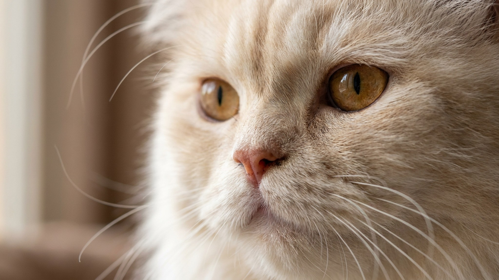

Персидская кошка — порода с самой требовательной шерстью среди домашних кошек. Плотный подшёрсток и длинная ость сваливаются в колтуны быстрее, чем кажется: достаточно пропустить пару дней расчёски. Дальше — либо долгое расплетание, либо ножницы, либо бритьё под «льва». Все три варианта легко предотвратить, если знать три вещи: где, чем и как часто.
🐾 Заведите дневник ухода за кошкой
Вес, шерсть, обработки, прививки — всё в одном месте. А если что-то смущает, AI-ветеринар ответит круглосуточно и бесплатно.
Завести дневник → Завести в MAX →
У вас iPhone? AnimaLife есть в App Store
У персидской кошки есть четыре зоны риска — туда нужно заходить расчёской в первую очередь:
Проверяйте эти зоны каждый раз при вычёсывании, даже если остальная шерсть выглядит нормально.
Минимальный набор для персидской кошки — три предмета:
Щётка-массажка и силиконовые перчатки — приятные дополнения, но не замена расчёске. Персидской кошке нужен именно зубчатый инструмент, который проходит сквозь всю толщину шерсти.
Ежедневное вычёсывание занимает 5–10 минут, если делать его регулярно. Редкий, но долгий сеанс кошка переносит хуже, чем короткий ежедневный.
Персидскую кошку купают раз в 4–6 недель — чаще не нужно, реже шерсть теряет объём и начинает жирниться. Перед купанием обязательно расчешите всю шерсть: мокрый колтун садится намертво и его можно только выстричь.
После мытья — сушка феном на тёплом режиме, без горячего. Расчёсывайте во время сушки: шерсть укладывается правильно и не сваливается. Без просушки персидская кошка остывает и рискует переохладиться, а влажная шерсть у кожи — прямой путь к раздражению.
Весенняя и осенняя линька у персидской кошки интенсивные. В эти периоды вычёсывайте дважды в день, используйте пуходёрку для удаления подшёрстка. Регулярный уход во время линьки — лучшая профилактика колтунов на весь следующий сезон.
Бритьё персидской кошки наголо — крайняя мера, а не решение проблемы ухода. После бритья шерсть отрастает неровно, структура часто меняется, а кошка теряет терморегуляцию. Персидская порода не переносит ни жару, ни холод так же хорошо, как короткошёрстные.
Стрижка оправдана в двух случаях: запущенные колтуны, которые невозможно расчесать без боли, и подготовка к операции по медицинским показаниям. В остальном — это не груминг, а устранение последствий пропущенного ухода.
Если вы чувствуете, что шерсть выходит из-под контроля, обратитесь к профессиональному грумеру: он расчешет, покажет технику и оценит состояние кожи.
🐾 Чтобы уход не держать в голове
AnimaLife напомнит, когда стричь когти, вычёсывать, купать и обрабатывать от паразитов, и заведёт дневник по вашему питомцу. Бесплатно.
Настроить напоминания → Настроить в MAX →
У вас iPhone? AnimaLife есть в App Store
🐾 Понравился разбор?
Подпишитесь на канал — каждый день разбираем по одному тревожному симптому у кошек и собак: что в пределах нормы, а когда пора к врачу. Подпишитесь, чтобы не пропустить разбор, который может спасти здоровье вашего питомца.